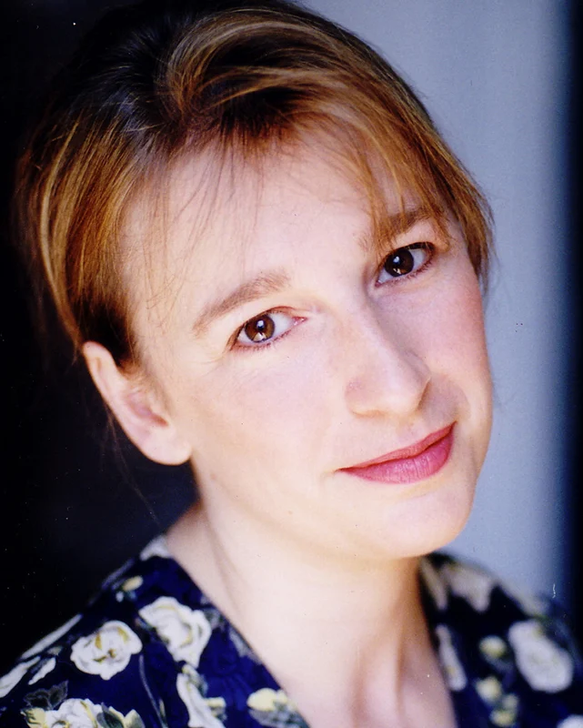

Sinopse
Intocáveis é um filme que conta a história de um milionário tetraplégico que contrata um homem da periferia para ser o seu acompanhante, apesar de sua aparente falta de preparo, a relação que antes era profissional cresce e vira uma amizade que mudará a vida dos dois.
- Diretores: Olivier Nakache, Éric Toledano.
- Lançamento: 31 de agosto de 2012.
- Gênero: Drama baseado em fatos reais.
- Duração: 1h 52min.
Personagem
Ator
Descrição
Foto
Philippe
François Cluzet
Um aristocrata rico que sofre um grave acidente e fica tetraplégico. Ele precisa de um assistente para ajudá-lo em sua vida diária.

Driss
Omar Sy
Um jovem problemático do subúrbio de Paris. Ele é contratado como assistente de Philippe, apesar de não ter experiência em cuidar de pessoas em seu estado. A amizade entre os dois floresce de maneira inesperada e transformadora.
Yvonne
Anne Le Ny
A governanta de Philippe, que também desempenha um papel importante na história.
Magalie
Audrey Fleurot
Uma das cuidadoras de Philippe.
Marcelle
Clotilde Mollet
Outra cuidadora que trabalha para Philippe.

Premiações
Festival Internacional de Cinema de Tóquio de 2011 (Japão).
Categoria
Resultado
Grande Prémio Sakura
Venceu
Melhor ator - François C. e Omar Sy
Venceu
Prix Lumières de 2012 (França)
Categoria
Resultado
Melhor ator - Omar Sy
Venceu
Globos de Cristal de 2012 (França)
Categoria
Resultado
Melhor filme
Venceu
Melhor ator - Omar Sy
Venceu
César de 2012 (França)
Categoria
Resultado
César de melhor filme
Indicado
César de melhor realizador
Indicado
César de melhor argumento original
Indicado
César de melhor ator - Omar Sy
Venceu
César de melhor ator - François Cluzet
Indicado
César de melhor atriz- Anne Le Ny
Indicado
César de melhor fotografia
Indicado
César de melhor montagem
Indicado
César de melhor som
Indicado